Partial Engine Assembly (2AZ-FE) Reassembly |
| 1. Install Balance Shaft Bearing NO.1 |
Clean the journals and the inner and outer surfaces of the bearings.
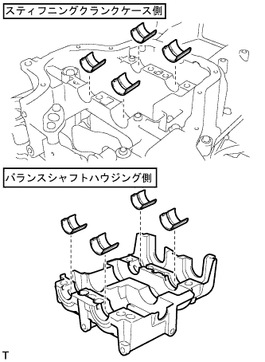 |
Align the claws and install the 8 balance shaft bearings No.1 to the stiffening crankcase assembly and balance shaft housing.
Apply engine oil to the bearing surfaces.
| 2. Install No. No.1 and No. No.2 Balance Shafts |
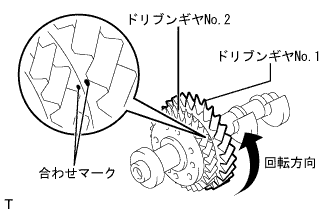 |
Turn the driven gear No.1 counterclockwise until it contacts the stopper, and align the matchmark of driven gear No.1 with the matchmark of driven gear No.2.
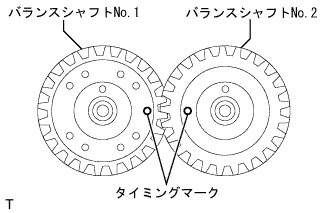 |
Align the timing marks of the No. No.1 and No. No.2 balance shafts with the positions shown in the illustration.
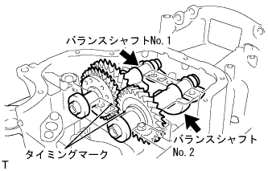 |
Set the No. No.1 and No. No.2 balance shafts together onto the stiffening crankcase.
Apply a light coat of engine oil to the bolt seats.
 |
Using a socket wrench (12mm), temporarily tighten the 8 balance shaft housing set bolts in several steps in the order shown in the illustration, then tighten them to the specified torque.
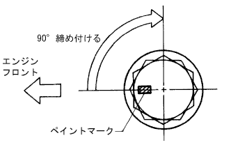 |
Mark the front of the housing set bolt heads with paint.
Using the paint marks as a guide, tighten each bolt an additional 90° in the tightening order.
Check that all paint marks have been turned 90° in the tightening direction.
| 3. Install Stiffening Crankcase Assembly |
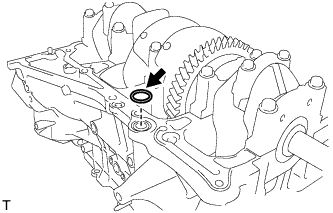 |
Install a new O-ring to the cylinder block.
Temporarily tighten the crankshaft pulley bolt.
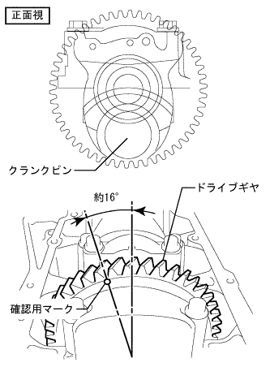 |
Turn the crankshaft and set it so that the crank pins of the No. No.1 and No. No.4 cylinders are pointing straight down.
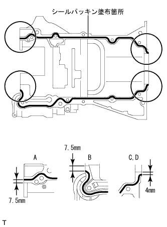 |
Apply seal packing black (diameter 2.5-3mm) to the location shown in the illustration.
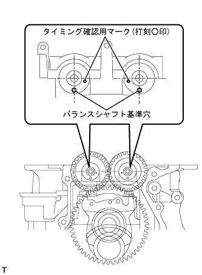 |
Install the stiffening crankcase assembly so that the reference holes of the No. No.1 and No. No.2 balance shafts are in the position shown in the illustration (straight down).
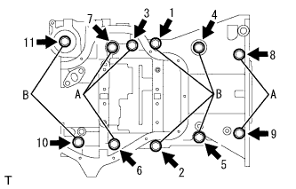 |
Uniformly and temporarily tighten the 11 bolts in several steps, then tighten them to the specified torque.
| Bolt Type | Bolt Length Under Head [mm] |
|---|---|
| A | 122 |
| B | 45 |
Wipe off any excess seal packing black with a clean shop rag.
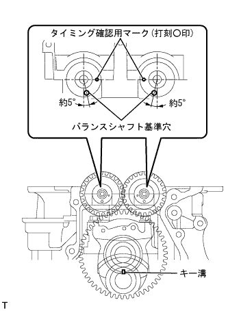 |
Turn the crankshaft again so that the crankshaft key groove points straight down, then check that the timing check marks are aligned as shown in the illustration.
Remove the crankshaft pulley bolt.
| 4. Install Oil Pump Assembly |
 |
Install the oil pump assembly with a new gasket and the 3 bolts.
| 5. Install Engine Rear Oil Seal |
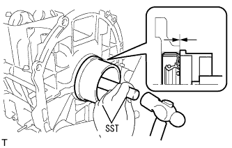 |
Using SST, uniformly tap in a new oil seal until its surface is flush with the cylinder block edge.
Apply a small amount of MP grease No.2 to the lip of the new oil seal.
| 6. Install Plug NO.1 (w/ Head Taper Screw) |
Apply adhesive 1324 to the threads.
 |
Install the taper screw plug No.1 to the cylinder block.
| 7. Install Oil Control Valve Filter |
Check that there is no foreign matter on the mesh.
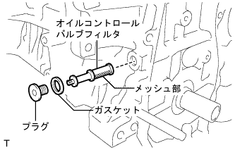 |
Assemble a new gasket and the oil control valve filter to the screw plug.
Using a 8 socket hexagon wrench, install the screw plug to the cylinder block.
| 8. Install Cylinder Block Water Drain Cock Sub-assembly |
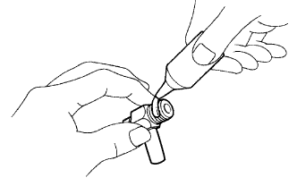 |
Apply adhesive 1344 to the water drain cock.
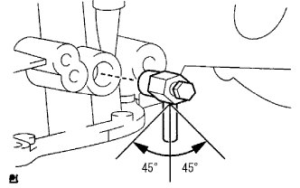 |
Using a socket wrench (14mm), tighten to the specified torque, then tighten further within 1 turn to set the pipe of the drain cock facing downward.
Install the water drain cock plug to the water drain cock.
| 9. Install Cylinder Block Water Jacket Spacer |
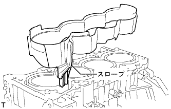 |
Install the cylinder block water jacket spacer to the water jacket as shown in the illustration.
| 10. Install Cylinder Head Gasket |
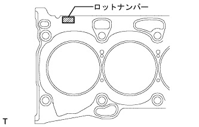 |
Place a new cylinder head gasket on the cylinder block with the lot number facing upward.
| 11. Install Cylinder Head Sub-assembly |
Install the cylinder head.
Apply a light coat of engine oil to the threads and seats of the cylinder head bolts.
Assemble the 10 cylinder head bolts and 10 plate washers to the cylinder head.
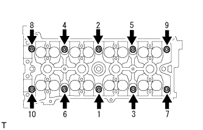 |
Using a double hexagon wrench (10mm), uniformly and temporarily tighten the 10 cylinder head bolts in several steps in the order shown in the illustration, then tighten them to the specified torque.
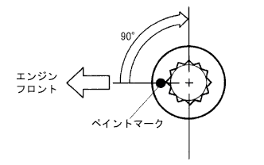 |
Mark the front of the cylinder head bolt heads with paint.
Using the paint marks as a guide, tighten each bolt an additional 90° in the tightening order.
Check that all paint marks have been turned 90° in the tightening direction.
| 12. Install Camshaft Timing Oil Control Valve Assembly |
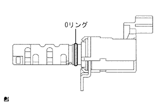 |
Apply a light coat of engine oil to a new O-ring.
 |
Install the camshaft timing oil control valve assembly to the cylinder head with the bolt.
| 13. Install Camshaft Timing Gear Assembly |
Secure the hexagonal service portion of the camshaft in a vise, with aluminum plates in between.
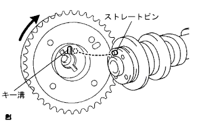 |
Assemble the camshaft timing gear assembly with its key groove offset from the camshaft straight pin as shown in the illustration.
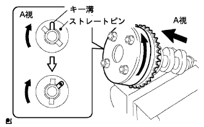 |
While lightly pressing the camshaft timing gear assembly, turn it in the direction shown in the illustration (counterclockwise), and push it in further when the key groove and straight pin are aligned.
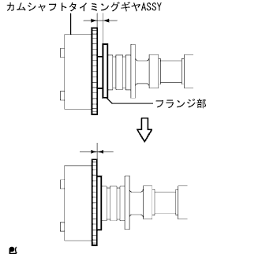 |
Check that there is no clearance between the camshaft timing gear assembly and the camshaft flange.
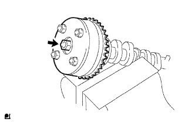 |
Tighten the set bolt of the camshaft timing gear assembly.
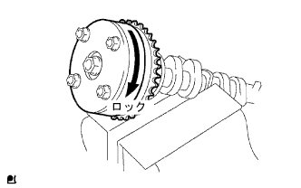 |
After tightening, turn the camshaft timing gear assembly in the retard direction (clockwise) to check that it moves, then turn it further and check that the camshaft timing gear assembly locks at the end of its travel.
| 14. Install Camshaft Timing Gear or Sprocket |
Secure the hexagonal service portion of the camshaft in a vise, with aluminum plates in between.
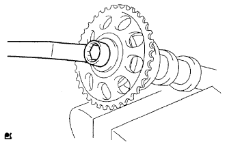 |
Install the camshaft timing gear with the bolt.
| 15. Install Camshaft Bearing NO.1 |
Clean the bearing installation surfaces and the inner and outer surfaces of the bearings.
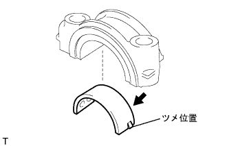 |
Align the claws and install the camshaft bearing No.1 to the camshaft bearing cap No.1.
| 16. Install Camshaft Bearing NO.2 |
Clean the bearing installation surfaces and the inner and outer surfaces of the bearings.
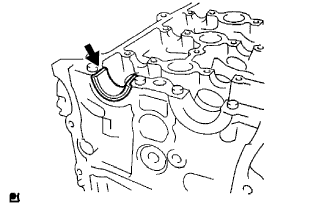 |
Install the camshaft bearing No.2 to the cylinder head.
| 17. Install Camshaft |
Apply a light coat of engine oil to the camshaft journals and camshaft.
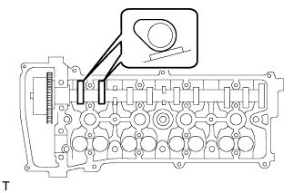 |
Set the camshaft so that the cam of the No. No.1 cylinder is in the position shown in the illustration.
Apply a light coat of engine oil to the threads and seats of the bolts.
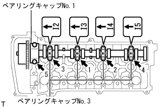 |
Check the marks and numbers on the camshaft bearing caps, and tighten the 4 camshaft bearing caps No.1 and No.3 in the order shown in the illustration.
| 18. Install Camshaft NO.2 |
Apply engine oil to the camshaft journals and camshaft.
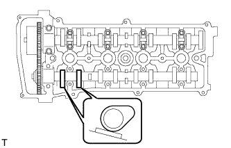 |
Set the camshaft No.2 so that the cam of the No. No.1 cylinder is in the position shown in the illustration.
Apply a light coat of engine oil to the threads and seats of the bolts.
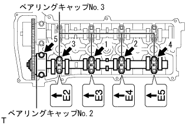 |
Check the marks and numbers on the camshaft bearing caps, and tighten the 4 camshaft bearing caps No.2 and No.3 in the order shown in the illustration.
| 19. Install Chain Sub-assembly NO.2 |
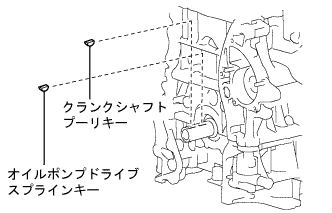 |
Install the crankshaft pulley key and oil pump drive spline key to the crankshaft.
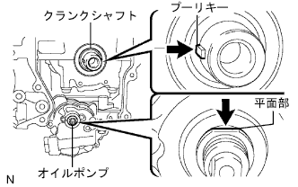 |
Set the crankshaft pulley key horizontally to the left.
Turn the flat part of the oil pump shaft upward.
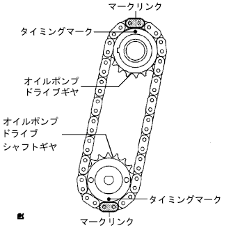 |
Align the mark links (yellow) with the timing marks as shown in the illustration, and assemble the chain.
With the chain assembled, insert each timing gear onto the crankshaft and oil pump shaft.
Temporarily tighten the oil pump drive shaft gear with the nut.
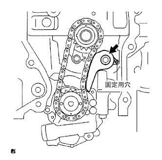 |
Insert the damper spring into the fixing hole, and assemble the chain tensioner plate with the bolt.
 |
Align the hole of the oil pump drive shaft gear with the fixing groove of the oil pump.
Insert a pin punch (diameter 3mm) into the hole of the oil pump drive shaft gear to hold the gear, and tighten the nut.
| 20. Install Crankshaft Timing Gear or Sprocket |
 |
Install the crankshaft timing gear to the crankshaft.
| 21. Install Chain Vibration Damper NO.1 |
 |
Install the chain vibration damper No.1 with the 2 bolts.
| 22. Install Chain Sub-assembly |
Check that the No. No.1 cylinder is at TDC/compression
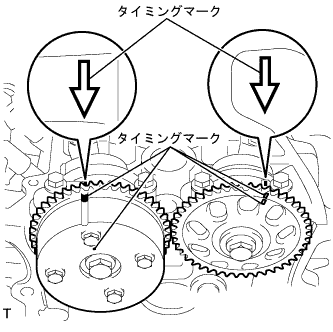 |
Check the positions of the timing marks on the camshaft timing gears and bearing caps.
Temporarily tighten the crankshaft pulley bolt.
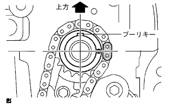 |
Turn the crankshaft clockwise and set the pulley key facing upward.
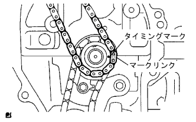 |
Align the timing mark of the crankshaft timing gear with the mark plate (gold or orange) of the chain.
Using a string, tie the chain near the timing gear.
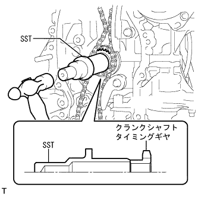 |
Using SST, install the crankshaft timing gear.
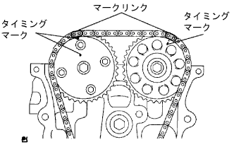 |
Align the timing marks of the camshaft timing gears with the mark plates (gold or yellow) of the chain, and install the chain.
Remove the string from the chain.
| 23. Install Chain Tensioner Slipper |
 |
Install the chain tensioner slipper with the bolt.
| 24. Install Timing Chain Guide |
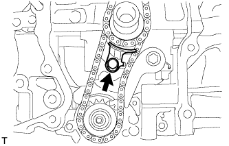 |
Install the timing chain guide with the bolt.
| 25. Install Crank Angle Sensor Plate NO.1 |
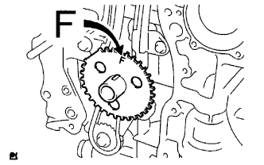 |
Install the crank angle sensor plate No.1 with the "F" mark facing the front of the engine.
| 26. Install Timing Gear Case or Timing Chain Case Oil Seal |
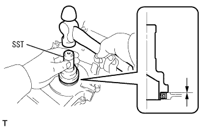 |
Using SST, uniformly tap in a new oil seal until its surface is flush with the edge of the timing chain (belt) cover.
Apply a small amount of MP grease No.2 to the lip of the new oil seal.
| 27. Install Timing Chain or Belt Cover Sub-assembly |
Before applying seal packing, thoroughly remove any old seal packing from the sealing surfaces.
Using brake cleaner or white gasoline, clean and degrease the contact surfaces of the timing chain (belt) cover, cylinder head and cylinder block so that they are free of oil, water and dirt.
Clean the installation surfaces of the timing chain, cylinder head and cylinder block.
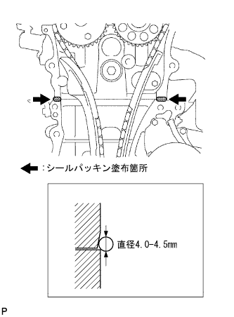 |
Apply seal packing black (diameter 4.0-4.5mm) to the 2 locations shown in the illustration.
Apply seal packing black to the locations shown in the illustration.
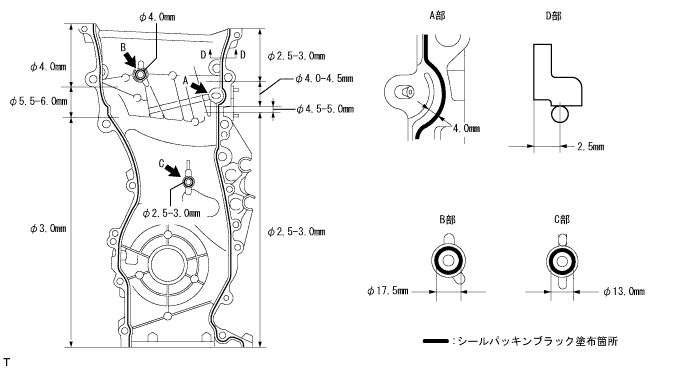
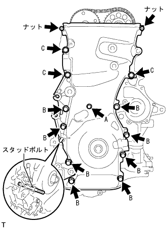 |
Install the timing chain cover with the 12 bolts and 2 nuts.
| Bolt | Length Under Head [mm] | Nominal Diameter [mm] |
|---|---|---|
| A | 30 | 6 |
| B | 30 | 8 |
| C | 40 | 10 |
Using a torx socket wrench (E10), install the stud bolt.
| 28. Install Engine Mounting Bracket RH |
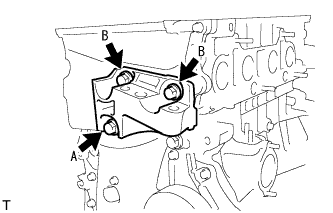 |
Install the engine mounting bracket RH with the 3 bolts.
| Bolt Type | Bolt Length Under Head [mm] |
|---|---|
| A | 65 |
| B | 40 |
| 29. Install V-ribbed Belt Tensioner Assembly |
 |
Install the V-belt tensioner assembly with the bolt and nut.
| 30. Install Crankshaft Position Sensor |
 |
Apply a light coat of engine oil to the O-ring.
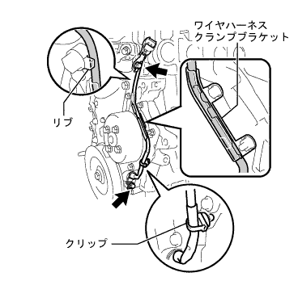 |
Install the crankshaft position sensor with the 2 bolts and clip.
| 31. Install Oil Pan Sub-assembly |
Clean the installation surfaces of the cylinder block and oil pan.
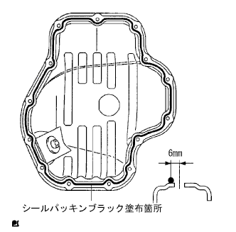 |
Apply seal packing black (diameter 3.0-4.0mm) to the location shown in the illustration.
Temporarily tighten the 12 bolts and 2 nuts in several steps in the order shown in the illustration, then tighten them to the specified torque.
| 32. Install Oil Pan Drain Plug |
Install the oil pan drain plug with a new gasket.
| 33. Install Water Pump Assembly |
Clean the installation surface of the cylinder block.
Apply seal packing 1282B (diameter 2.2-2.5mm) along the outside of the groove of the water pump.
 |
Install the water pump and wire harness clamp bracket with the 4 bolts and 2 nuts.
| 34. Install Water Pump Pulley |
Using SST, install the water pump pulley with the 4 bolts.
| 35. Install Crankshaft Pulley |
Align the key groove of the crankshaft pulley with the pulley key, and install the crankshaft pulley.
Using SST, hold the crankshaft pulley and tighten the pulley bolt.
| 36. Install Chain Tensioner Assembly NO.1 |
Set the hook of the chain tensioner as shown in the illustration.
Install the chain tensioner assembly No.1 with a new gasket and the 2 nuts.
Turn the crankshaft slightly counterclockwise and check that the hook is released.
Turn the crankshaft clockwise and check that the plunger is extended.
| 37. Inspect Valve Clearance |
Turn the crankshaft clockwise to set the No. No.1 cylinder to TDC/compression, and align the timing mark (notch) with the 0° position of the timing chain cover.
Check that the timing marks of the camshaft timing gears and bearing caps are in the positions shown in the illustration.
Inspect the valve clearance at the positions shown in the illustration.
Using a feeler gauge, measure the clearance between the valve lifter and camshaft.
Record any out-of-specification clearance measurements.
| Measurement Point | Standard [mm] (Cold) |
|---|---|
| Intake Side | 0.19-0.29 |
| Exhaust Side | 0.38-0.48 |
Turn the crankshaft one revolution clockwise to set the No. No.4 cylinder to TDC/compression.
Inspect the valve clearance at the positions shown in the illustration.
Using a feeler gauge, measure the clearance between the valve lifter and camshaft.
Record any out-of-specification clearance measurements.
| Measurement Point | Standard [mm] (Cold) |
|---|---|
| Intake Side | 0.19-0.29 |
| Exhaust Side | 0.38-0.48 |
| 38. Adjust Valve Clearance |
Turn the crankshaft clockwise to set the No. No.1 cylinder to TDC/compression.
Place paint marks on the chain plates corresponding to the timing marks of the camshaft timing gears.
 |
Remove the chain tensioner assembly No.1.
Using the hexagonal service portion of the camshaft, loosen the set bolt of the camshaft timing gear.
 |
Remove the 4 camshaft bearing caps No.2 and No.3 in the order shown in the illustration.
With the camshaft No.2 raised, remove the set bolt of the camshaft timing gear.
Separate the camshaft No.2 from the camshaft timing gear.
Remove the chain from the camshaft timing gear.
 |
Remove the 4 camshaft bearing caps No.1 and No.3 in the order shown in the illustration.
Hold the chain by hand and remove the camshaft.
Suspend the chain with rope or wire.
Remove the valve lifters and, using a micrometer, measure the thickness at the location shown in the illustration.
Calculate the thickness of the valve lifter so that the valve clearance is within specification.
| A | Selected valve lifter |
| B | Thickness of removed valve lifter |
| C | Measured valve clearance |
Select a valve lifter.
Install the selected valve lifters.
Align the marked plate of the chain with the timing mark of the camshaft timing gear assembly and install.
Check the front marks and numbers on the bearing caps, and install the 4 bearing caps No.1 and No.3 in the order shown in the illustration.
Set the camshaft No.2 on the cylinder head, align the marked plate of the chain with the timing mark of the timing gear, and install.
With the camshaft No.2 raised, temporarily install the set bolt of the camshaft timing gear.
Check the front marks and numbers on the bearing caps, and install the 4 bearing caps No.2 and No.3 in the order shown in the illustration.
Using an adjustable wrench, hold the hexagonal service portion of the camshaft.
Using a union nut wrench (14mm), tighten the set bolt of the camshaft timing gear.
) After the timing chain is assembled, check that each timing mark is in the position shown in the illustration.
Install Chain Tensioner Assembly No.1
Set the hook of the chain tensioner as shown in the illustration.
Install the chain tensioner assembly No.1 with a new gasket and the 2 nuts.
Turn the crankshaft slightly counterclockwise and check that the hook is released.
Turn the crankshaft clockwise and check that the plunger is extended.
| 39. Install Camshaft Position Sensor |
Apply a light coat of engine oil to the O-ring.
 |
Install the camshaft position sensor to the cylinder head with the bolt.
| 40. Install Cylinder Head Cover Gasket |
Install the cylinder head cover gasket to the cylinder head cover.
| 41. Install Cylinder Head Cover Sub-assembly |
Apply seal packing black to the locations shown in the illustration.
Install the cylinder head cover.
| 42. Install Oil Filter Union |
 |
Using a 12 socket hexagon wrench, install the oil filter union.
| 43. Install Oil Filter Sub-assembly |
When not using a torque wrench
Remove any dirt and foreign matter from the installation surface on the engine.
Apply a light coat of engine oil to the O-ring of a new oil filter.
Install the oil filter by hand until the O-ring contacts the installation surface.
Using SST, tighten it an additional 3/4 turn.
When using a torque wrench
Remove any dirt and foreign matter from the oil filter installation surface on the engine.
Apply a light coat of engine oil to the O-ring of a new oil filter.
Using SST, install the oil filter.
| 44. Install Spark Plug |
Install the 4 spark plugs to the cylinder head.
| 45. Install Ventilation Valve Sub-assembly |
Apply adhesive 1324 to the threads of the ventilation valve.
 |
Using a deep socket wrench (22mm), install the ventilation valve to the cylinder head cover LH.
| 46. Install Oil Filler Cap Gasket |
Install a new gasket to the oil filler cap.
| 47. Install Oil Filler Cap Sub-assembly |
 |
Install the oil filler cap to the cylinder head cover.